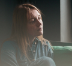

– Відео-інтерв'ю з остеопатом-кінезіологом: «Стрес у тілі» (де
пояснюється наслідки стресу на рівні фізики тіла: де
залишається стрес , а також подано чіткі рекомендації як можна
собі швидко допомогти самостійно)
– Тест визначення вашого поточного рівня стресу
– Лікувальний протокол харчування при стресі (практичні
рекомендації)
цей курс для тебе: Якщо ти:

Відчуваєш,що у твоєму житті криза
і стрес тисне на тебе
Проходиш складний період у своєму житті,
такий як труднощі на роботі, фінансова криза, розлучення,
зміна роботи, втрата близького
Часто відчуваєш
підвищену тривожність
Не справляєшся з напругою
і хочеш вже сісти на антидепресанти
Підприємць і тобі не вистачає сил
на постійну боротьбу з конкурентами, гонитву за клієнтами
Втратив стабільність
у житті у зв'язку з кризою у відносинах
Знаходишся в періоді адаптації
до нових умов життя в іншій країні (переїзд), до нової роботи
Періодично відчуваєш безпричинні сплески
агресії, дратівливості або навпаки апатії та безсилля
(знаходишся на емоційних гойдалках)
Іноді відчуваєш,
що не вистачає сил на багатозадачність
ПРО АВТОРА
17+років у практичній медецині
36 000+проконсультованих пацієнтів з різною
патологією
Ірина Галенко
інтегративний лікар
Маю кілька спеціалізацій і, зокрема, Міжнародний диплом
Спікер наукових конференцій
Спікер на ТБ. Засновниця унікальної медичної студії корекції
фігури для жінок у Харкові. Автор системи відновлення
нейромедіаторів під час хронічного стресу. Поєдную методики
традиційної та холістичної медицини, нутриціології,
траволікування, а також психосоматичної корекції
Сама особисто неодноразово проходила через гострий стрес
та його наслідки на організм (була 2 роки директором
онкологічної клініки в Україні та перебувала у постійному
темпі та багатозадачності; досвід відкриття з нуля власної
медичної студії та стрес підприємництва в період COVIDa;
змінила вже 4 міста для проживання та клініки для роботи за
останні 2 роки після початку війни в Україні), внаслідок чого
заглибилася у знання нейробіології, та розробила систему
медичної та психологічної корекції виходу зі стресу, та
відновлення роботи нервової системи
ПРО курс
Курс складається з коротких чітких уроків, де зібрано максимально
корисну практичну інформацію без зайвої води
Також чіткі письмові рекомендації про те, як можна підтримати себе
і що пропити самостійно
Прослухавши всі матеріали ви відразу зможете забрати собі і
впровадити чіткі техніки впливу і відновлення організму від стресу
Встигни зареєструватись до кінця доби і забери
– Відео-інтерв'ю з остеопатом-кінезіологом: «Стрес у тілі» (де
пояснюється наслідки стресу на рівні фізики тіла: де
залишається стрес , а також подано чіткі рекомендації як можна
собі швидко допомогти самостійно)
– Тест визначення вашого поточного рівня стресу
– Лікувальний протокол харчування при стресі (практичні
рекомендації)
ПРОГРАМА КУРСУ
1 УРОК
Що таке стрес? Як він руйнує наш організм? І чому
це «лагідний вбивця» для нашого здоров'я?
2 УРОК
Ваша точка А. Check-up аналізи енергобалансу
3 УРОК
Механізм реагування нашої нервової системи Яна
рівні нейромедіаторів та гормонів
4 УРОК
Стресові пастки
5 УРОК
Як психічно та фізично витримувати стрес
6 УРОК
Симпатична та парасимпатична системи. Практичні
методи впливу на зупинку стресу
7 УРОК
Модифікація способу життя – допоміжні методи
корекції стресу
8 УРОК
Харчування під час стресу: що краще їсти, щоб
підтримати організм
9 УРОК
Які мікроелементи витрачаються на боротьбу зі
стресом і що пити насамперед, щоб відновити ресурс організму
В результаті ви будете мати повне розуміння, що
відбувається з вами під час нервового напруження і як прибрати
руйнівну дію гормонів стресу на тіло і на психіку
Адже ми всі добре знаємо, що практично всі хвороби з'являються від
нервів
1885 грн 377 грн
Введіть свої дані, натисніть "Купити курс" і система одразу
перенаправить Вас до оплати!
Одразу після оплати Вам надійде доступ на пошту
Перевіряйте, будь ласка, папки Спам і Промоакції
Встигни зареєструватись до кінця доби і забери
– Відео-інтерв'ю з остеопатом-кінезіологом: «Стрес у тілі»
(де пояснюється наслідки стресу на рівні фізики тіла: де
залишається стрес , а також подано чіткі рекомендації як
можна собі швидко допомогти самостійно)
– Тест визначення вашого поточного рівня стресу
– Лікувальний протокол харчування при стресі (практичні
рекомендації)
Як відбувається навчання
Відразу після оплати ви будете переадресовані в телеграм канал
із матеріалами курсу та бонусами
Також, ви зможете приєднатися до чату, де я відповідатиму на
запитання і періодично робитиму розбори
В результаті курсу ви:
зрозумієте що таке стрес і як саме він шкодить нашому організму
матимете повне розуміння руйнівних впливів на організм: особливо
на нервову систему
навчитесь захищатися від стресу різними доступними та простими
способами
візьмете свій емоційний стан під контроль
отримаєте практичні рекомендації, які можна використовувати все
життя, адже стрес присутній в житті досить часто
навчитеся впливати через свою периферичну нервову систему на
центральну
ЗАПИТАННЯ, ЯКІ МОЖУТЬ ВИНИКНУТИ
Чи можна ці знання застосовувати в сім'ї для родичів?
Безумовно ТАК! Більше того - навіть потрібно! Ви зможете
допомагати не тільки собі, але і своїм улюбленим близьким
людям. Оскільки це загальні рекомендації для всіх
А чи є гарантія результату?
Так, за умови, що ви не просто прослухали, а й почали щось
робити. Навіть кілька простих дій вже значно наблизять вас до
бажаного результату спокою та врівноваженості нервової системи
Чи зможу купити препарати без рецепта, які будуть в
рекомендаціях?
Так, це дуже доступні та бюджетні кошти: їх можна придбати як
в аптеці, так і в інтернет-магазинах
Чи обов'язково задавати аналізи, або це за бажанням?
Чек ап - це суто за вашим бажанням, щоб ви мали змогу
поглибитися та зрозуміти конкретний стан вашого здоров'я. І в
разі потреби звернутися до спеціаліста вже з конкретною
проблему. Це як компас, який зможе вказати вам напрям
подальших дій
Чи буде чат? Чи зможу поставити уточнюючі питання?
Є чат для спілкування з іншими учасниками курсу, а так само
завжди є можливість задати в загальній групі уточнююче
питання, і отримати на нього відповідь від мене
Скільки місяців доступ до курсу?
Доступ до матеріалів курсу на 2 місяці, і є можливість
залишатися в чаті назавжди